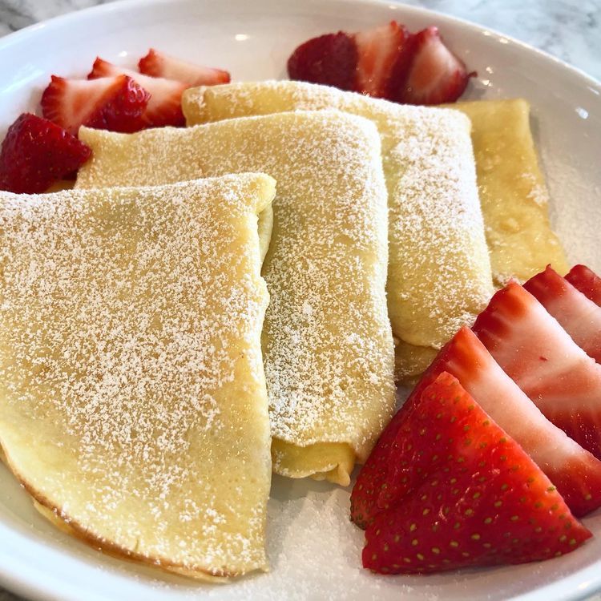

Crepes

Description
These homemade crepes are ultra thin and delicate with the most buttery crisp edges. Easy to make with just a blender and regular skillet, they’re ready for your choice of sweet or savory fillings and toppings. No special pans required for these French-style pancakes. And, best of all, you only need 5 basic ingredients!
Ingredients
- 2 large eggs
- 1/2 cup milk
- 1/2 cup water
- 1/4 tsp salt
- 2 tbsp butter, melted
Steps
- Whisk eggs, milk, water, and salt together in a large mixing bowl. Add flour and melted butter; whisk vigorously until batter is smooth and pourable.
- Heat a lightly oiled griddle or frying pan over medium-high heat. Pour or scoop the batter onto the pan, using approximately 1/4 cup for each crêpe. Tilt the pan with a circular motion so that the batter coats the surface evenly.
- Cook until the top of the crêpe is no longer wet and the bottom has turned light brown, 1 to 2 minutes. Run a spatula around the edge of the skillet to loosen the crêpe; flip and cook until the other side has turned light brown, about 1 minute more.
- Serve hot. Enjoy!
Go back